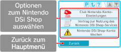

● Dein Club Nintendo-Konto verbinden
Als Club Nintendo-Mitglied kannst du eine E-Mail-Adresse, die zuvor auf der Nintendo-Website registriert wurde, mit deinem Nintendo DSi Shop-Konto verbinden. Bitte besuche www.nintendo.com/countryselector, um weitere Informationen zu erhalten.
Wenn du deine E-Mail-Adresse mit deinem Nintendo DSi Shop-Konto verbindest, kannst du zusätzliche Vorteile nutzen. Unter www.club-nintendo.com findest du weitere Informationen.
● Vertrag zur Nutzung des Nintendo DSi Shop-Services einsehen
Lies den VERTRAG ZUR NUTZUNG DES NINTENDO DSi SHOP-SERVICES, um detaillierte Informationen zu Vertragsbedingungen und Konditionen bezüglich der Dienste, die über den Nintendo DSi Shop angeboten werden, zu erhalten.
● Dein Nintendo DSi Shop-Konto löschen
Löschst du dein Nintendo DSi Shop-Konto, werden deine gesamten Nintendo DSi Points und deine heruntergeladene Software gelöscht. Es ist dann nicht mehr möglich, diese Software erneut kostenlos herunterzuladen.